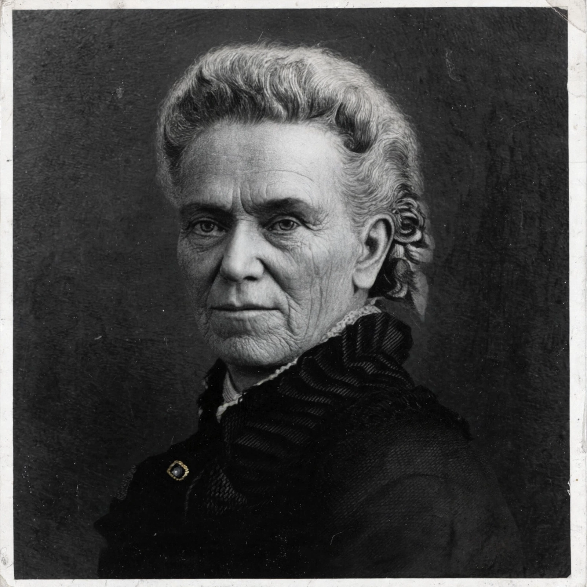

Matilda Joslyn Gage (March 24, 1826 – March 18, 1898) was an American writer, abolitionist, and women's rights activist, a leader of the suffrage movement alongside Susan B. Anthony and Elizabeth Cady Stanton.

| Matilda Joslyn Gage | |
|---|---|
| Born | March 24, 1826, Cicero, New York |
| Died | March 18, 1898, Chicago, Illinois |
| Known for | Women's suffrage, Woman, Church and State |
Gage co-edited the History of Woman Suffrage and co-authored the Declaration of Rights of the Women of the United States (1876). More radical than many colleagues, she opposed church authority over women's subordination.
Her 1893 book argued Christianity had oppressed women and documented earlier matriarchal societies and the witch trials.
The Matthew effect variant called the Matilda effect — the systematic under-recognition of women scientists — was named for her by historian Margaret Rossiter. She was mother-in-law of L. Frank Baum.